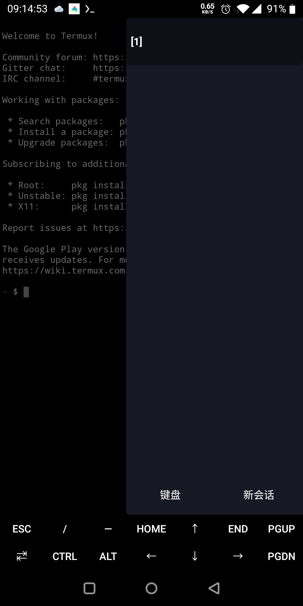

ZeroTermux 原理解析：给 Termux 套一层"配置管理层"到底解决了什么
Termux 社区流传着大量 proot 脚本、X11 补丁和备份方案，ZeroTermux 的本质是把这些散落的极客技巧收编成产品级能力——这层封装背后的设计取舍值得拆解。
如果你用过原版 Termux，一定见过社区里流传的那串命令：手动装 termux-x11-nightly、敲 proot 加一堆参数启动发行版、自己 tar -czf 整个 PREFIX 目录备份、改 sources.list 切清华源……这些东西不是没人做，而是没人帮你把它们打包。
Termux 的设计哲学是"最小可行 + 自由拼装"——它给你一把好刀，但切肉的刀法要你自己练。ZeroTermux 的官网上列了十几项它额外封装的功能，本质上就是把社区里被反复验证的那些好用脚本、补丁和配置，直接打包进应用，让普通用户也能享受到极客们才折腾得起来的功能。想安装的话直接从下载拿包就行。但这个"打包"不是简单的堆叠——背后有一套值得拆解的架构设计。
核心架构：三层结构的职责分离
从样本文档里的功能清单能看出端倪：多容器管理、zt 命令体系、X11 设置面板、VNC 快速连接、定时任务菜单、开机启动脚本……这些能力分布在两个层次。
最底层是原版 Termux 的能力——proot 容器机制、apt 包管理、bash shell、termux-x11 的 X Server。ZeroTermux 没有替换这些东西，而是在上面叠了一层"配置管理层"：一个带菜单的 UI 壳 + 一套 zt 命令桥接。zt 是关键——它把应用侧的功能（弹窗、Toast 通知、软链接管理）暴露成终端命令，让 Shell 脚本可以直接调用应用能力，而不用绕路。

这个设计的精妙之处在于：它解决了一个老问题——UI 操作和命令行脚本的割裂。原版 Termux 里，菜单选项和 Shell 会话之间几乎没有通信通道。ZeroTermux 通过 zt 打通了这条管道：你可以在启动脚本里写 zt toast "容器已就绪"，就能从终端触发一个 Android 系统通知。这种 UI ↔ Shell 的双向桥接，是它区别于其他 Termux 增强版的核心机制。想深入了解 zt 的完整命令集和参数说明，ZeroTermux文档里有详细的使用示例。
容器管理：把 proot 从命令行变成菜单
proot 本身是一个功能强大的用户空间容器工具——它不用 root 就能在 Android 上跑各种 Linux 发行版。但它的命令行参数极其复杂：proot-distro login ubuntu 看起来简洁，背后是几十行挂载点配置、用户 ID 映射、系统调用过滤的组合拳。
ZeroTermux 做了两件事：一是把发行版选择做成菜单一键化（Ubuntu、Kali 等），二是给容器加了备份和隔离机制。备份支持 tar.gz、tar.xz、tar.bz2 三种格式——这不仅仅是压缩算法的选择，xz 的高压缩率适合大容器长期归档，gz 的解压速度适合日常频繁恢复。隔离层面，每个容器有独立的 proot 环境，互不干扰，菜单里可以自由创建、切换、删除。
启动脚本：为什么要两套
样本文档里提到的双启动脚本设计（bash.bashrc vs start_command.sh），是 ZeroTermux 在设计层面做的一个细节决策。
原版 Termux 只有 bash.bashrc——每次开启一个 Shell 会话都会读一遍。这意味着如果你在里面写了 cd /workspace，开三个终端窗口就会执行三次；如果写了启动 X11 之类的阻塞命令，整个 Shell 会卡住。ZeroTermux 增加的 start_command.sh 是应用侧的启动钩子——它只在 ZeroTermux 应用打开时执行一次，开多个终端窗口不会重复触发。
我把这个设计类比成电脑的"开机自启动项"和"每次打开终端运行的 profile"——前者适合放一次性的初始化（启动后台服务、设置全局环境变量），后者适合放每次 Shell 会话都需要的配置（alias、PATH 追加）。这个区分看似小，但对于想在手机上搭自动化环境的用户来说是必需的——你总不想每开一个终端窗口就多起一份 sshd 进程吧。
软件源切换和 VNC：典型的"降门槛"设计
样本文档里的软件源切换和 VNC 快速连接，是另一种设计模式：不是发明新东西，而是把已有能力从"只有极客能搞定"降到"点一下就行"。
软件源切换本质就是改 $PREFIX/etc/apt/sources.list 里的 URL。但原版 Termux 里这意味着你要知道清华源的地址、知道用什么编辑器打开、知道改完要跑 apt update。ZeroTermux 把它做成了"常用功能 → 切换源 → 清华源"的三击菜单——背后是预存好的镜像地址数组和自动执行的更新命令。
VNC 快速连接同理。原版 Termux 里要先装 tightvnc、手动起 vncserver :1、找个 VNC 客户端连 127.0.0.1:5901。ZeroTermux 内置了客户端，菜单点"快速 VNC"就帮你填好了地址、端口和默认密码。zt vnc 命令还支持自定义参数，方便脚本化调用。

这套设计的代价和边界
说了这么多好处，这套架构也有明确的取舍和边界。
第一，ZeroTermux 是 Termux 的"增强层"而不是替代者。Termux 每次重大版本更新，ZeroTermux 都需要重新适配——如果 Termux 改了 PREFIX 路径、改了 proot 的集成方式，ZeroTermux 的功能可能就会失效。这比纯开源脚本社区的松散协同要脆弱一些。
第二，proot 容器本质是用户空间隔离，不是真正的虚拟机。你可以在里面跑 Ubuntu、装 Kali 工具链，但不能跑内核模块、不能做需要内核级隔离的操作。想在手机上真正跑一台完整的 Linux 虚拟机，还是得走 QEMU + 磁盘镜像的路线——ZeroTermux 虽然内置了 QEMU 脚本入口，但那是另一条路，性能和体验都和 proot 不是一个量级。
第三，界面壳本身也有学习成本。对于已经熟练掌握原版 Termux 命令行的用户来说，菜单化操作反而可能显得冗余——"我自己敲一行命令就搞定的事，为什么要开三级菜单？"ZeroTermux 的设计出发点是降低新用户门槛，而不是为老手提速。
适合谁，不适合谁
综合下来，ZeroTermux 的定位很清晰：它适合想在 Android 上跑 Linux 但不想从零折腾的人——差旅途中临时需要 Vim 和 SSH 的开发者、想在手机上学 Linux 的学生、喜欢折腾 proot 发行版但嫌手动切换麻烦的极客。它把社区里散落在论坛和脚本仓库里的知识收敛成了产品，让这些能力从"极客专利"变成了"开箱即用"。
但如果你是一个追求极致轻量化的极简主义者，或者需要真正内核级隔离的运行环境，那原版 Termux 加上手动拼装的脚本套件可能更适合你。ZeroTermux 的价值不在于它做了什么新事情，而在于它把已有的事情做得更顺了——这可能也是开源社区里最容易被忽视的一种贡献：把散落的碎片拼成一张完整的图。
一句话收尾
ZeroTermux 不是 Termux 的替代品，而是 Termux 的"应用化包装层"。它解决的核心问题是：把极客社区反复验证但始终没有收敛的能力，做成一套普通用户也能直接用的产品。这个定位决定了它的边界——它不会带你走进内核的深处，但它会帮你跳过那些无聊的配置陷阱，让你直接开始做事。关于它的配置文件和脚本细节，我分别在GitHub、Gitee 和 GitCode 上同步了一份，方便不同网络环境的同学查阅。